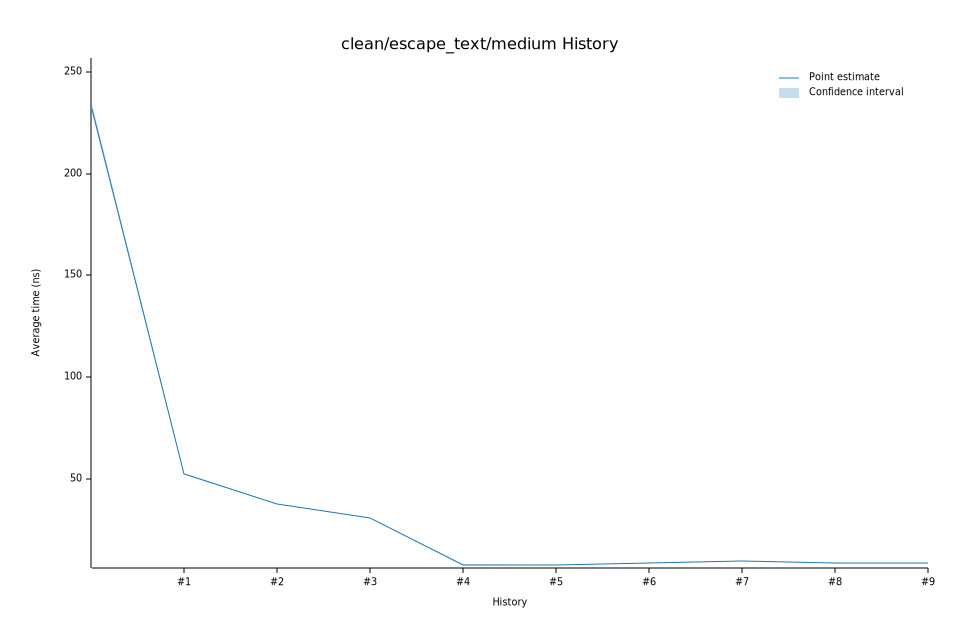

# 172023-02-03T23:00:56-08:00
|
Lower Bound |
Estimate |
Upper Bound |
| Value: |
8.29ns |
8.33ns |
8.37ns |
| Throughput: |
14149.45MiB/s |
14088.30MiB/s |
14019.03MiB/s |
| Change in Value: |
+21.916% |
+23.480% |
+24.942% |
| Change in Throughput: |
-17.976% |
-19.015% |
-19.963% |
No change in performance detected.
# 162023-01-31T06:02:04-08:00
|
Lower Bound |
Estimate |
Upper Bound |
| Value: |
6.75ns |
6.78ns |
6.82ns |
| Throughput: |
17387.40MiB/s |
17301.20MiB/s |
17195.83MiB/s |
| Change in Value: |
-23.561% |
-22.407% |
-21.386% |
| Change in Throughput: |
+30.822% |
+28.878% |
+27.205% |
No change in performance detected.
# 152023-01-21T07:24:13-08:00
|
Lower Bound |
Estimate |
Upper Bound |
| Value: |
8.67ns |
8.73ns |
8.85ns |
| Throughput: |
13530.73MiB/s |
13436.04MiB/s |
13251.38MiB/s |
| Change in Value: |
-3.1512% |
-1.9849% |
-0.5039% |
| Change in Throughput: |
+3.2537% |
+2.0250% |
+0.5064% |
No change in performance detected.
# 142023-01-21T06:22:01-08:00
|
Lower Bound |
Estimate |
Upper Bound |
| Value: |
8.86ns |
8.88ns |
8.91ns |
| Throughput: |
13242.02MiB/s |
13202.97MiB/s |
13159.39MiB/s |
| Change in Value: |
-1.0398% |
-0.2098% |
+0.7539% |
| Change in Throughput: |
+1.0508% |
+0.2103% |
-0.7482% |
Change within noise threshold.
# 132023-01-21T06:17:51-08:00
|
Lower Bound |
Estimate |
Upper Bound |
| Value: |
8.89ns |
8.91ns |
8.94ns |
| Throughput: |
13195.86MiB/s |
13163.13MiB/s |
13128.30MiB/s |
| Change in Value: |
-2.4936% |
-1.2582% |
-0.1241% |
| Change in Throughput: |
+2.5573% |
+1.2742% |
+0.1243% |
No change in performance detected.
# 122023-01-21T06:13:20-08:00
|
Lower Bound |
Estimate |
Upper Bound |
| Value: |
8.90ns |
8.93ns |
8.96ns |
| Throughput: |
13185.55MiB/s |
13138.52MiB/s |
13085.87MiB/s |
| Change in Value: |
+0.2708% |
+1.4177% |
+2.7092% |
| Change in Throughput: |
-0.2700% |
-1.3979% |
-2.6377% |
No change in performance detected.
# 112023-01-21T06:08:48-08:00
|
Lower Bound |
Estimate |
Upper Bound |
| Value: |
8.86ns |
8.89ns |
8.91ns |
| Throughput: |
13236.62MiB/s |
13201.52MiB/s |
13164.47MiB/s |
| Change in Value: |
-0.6013% |
+0.5925% |
+1.6366% |
| Change in Throughput: |
+0.6049% |
-0.5890% |
-1.6102% |
Change within noise threshold.
# 102023-01-21T06:04:24-08:00
|
Lower Bound |
Estimate |
Upper Bound |
| Value: |
8.82ns |
8.85ns |
8.88ns |
| Throughput: |
13298.99MiB/s |
13256.62MiB/s |
13206.11MiB/s |
| Change in Value: |
-1.9480% |
-0.8732% |
+0.3397% |
| Change in Throughput: |
+1.9867% |
+0.8809% |
-0.3386% |
Change within noise threshold.
# 92023-01-21T05:59:52-08:00
|
Lower Bound |
Estimate |
Upper Bound |
| Value: |
8.86ns |
8.90ns |
8.93ns |
| Throughput: |
13233.14MiB/s |
13183.95MiB/s |
13128.70MiB/s |
| Change in Value: |
+4.2632% |
+5.4693% |
+6.6204% |
| Change in Throughput: |
-4.0889% |
-5.1857% |
-6.2093% |
No change in performance detected.
# 82023-01-14T18:23:33-08:00
|
Lower Bound |
Estimate |
Upper Bound |
| Value: |
8.42ns |
8.46ns |
8.50ns |
| Throughput: |
13926.99MiB/s |
13866.28MiB/s |
13801.64MiB/s |
| Change in Value: |
-12.599% |
-11.013% |
-9.5877% |
| Change in Throughput: |
+14.415% |
+12.376% |
+10.604% |
No change in performance detected.
# 72023-01-13T17:16:12-08:00
|
Lower Bound |
Estimate |
Upper Bound |
| Value: |
9.32ns |
9.39ns |
9.48ns |
| Throughput: |
12582.64MiB/s |
12487.82MiB/s |
12372.09MiB/s |
| Change in Value: |
+13.148% |
+14.783% |
+17.086% |
| Change in Throughput: |
-11.620% |
-12.879% |
-14.592% |
No change in performance detected.
# 62023-01-13T17:12:45-08:00
|
Lower Bound |
Estimate |
Upper Bound |
| Value: |
8.31ns |
8.34ns |
8.38ns |
| Throughput: |
14112.71MiB/s |
14057.14MiB/s |
14001.49MiB/s |
| Change in Value: |
+9.9663% |
+10.734% |
+11.566% |
| Change in Throughput: |
-9.0630% |
-9.6934% |
-10.367% |
No change in performance detected.
# 52023-01-13T17:07:31-08:00
|
Lower Bound |
Estimate |
Upper Bound |
| Value: |
7.41ns |
7.44ns |
7.48ns |
| Throughput: |
15826.03MiB/s |
15758.58MiB/s |
15686.06MiB/s |
| Change in Value: |
-4.5071% |
-2.8718% |
-1.4112% |
| Change in Throughput: |
+4.7198% |
+2.9567% |
+1.4314% |
No change in performance detected.
# 42023-01-13T17:02:09-08:00
|
Lower Bound |
Estimate |
Upper Bound |
| Value: |
7.55ns |
7.67ns |
7.85ns |
| Throughput: |
15544.95MiB/s |
15298.07MiB/s |
14938.20MiB/s |
| Change in Value: |
-75.125% |
-74.722% |
-74.322% |
| Change in Throughput: |
+302.01% |
+295.60% |
+289.44% |
No change in performance detected.
# 32023-01-13T16:58:46-08:00
|
Lower Bound |
Estimate |
Upper Bound |
| Value: |
30.40ns |
30.54ns |
30.71ns |
| Throughput: |
3858.40MiB/s |
3840.69MiB/s |
3819.37MiB/s |
| Change in Value: |
-21.481% |
-20.308% |
-19.236% |
| Change in Throughput: |
+27.359% |
+25.483% |
+23.818% |
No change in performance detected.
# 22023-01-13T16:56:47-08:00
|
Lower Bound |
Estimate |
Upper Bound |
| Value: |
37.48ns |
37.58ns |
37.70ns |
| Throughput: |
3129.35MiB/s |
3121.05MiB/s |
3111.32MiB/s |
| Change in Value: |
-28.680% |
-27.570% |
-26.420% |
| Change in Throughput: |
+40.213% |
+38.064% |
+35.907% |
No change in performance detected.
# 12023-01-13T16:54:47-08:00
|
Lower Bound |
Estimate |
Upper Bound |
| Value: |
52.09ns |
52.43ns |
52.80ns |
| Throughput: |
2251.91MiB/s |
2237.21MiB/s |
2221.53MiB/s |
| Change in Value: |
-77.785% |
-77.390% |
-77.012% |
| Change in Throughput: |
+350.16% |
+342.28% |
+335.00% |
No change in performance detected.
# 02023-01-13T16:52:55-08:00
|
Lower Bound |
Estimate |
Upper Bound |
| Value: |
229.95ns |
231.92ns |
234.21ns |
| Throughput: |
510.11MiB/s |
505.79MiB/s |
500.84MiB/s |